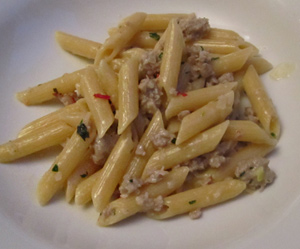

Penne con Salsiccia piccante e Menta
5,5 von 6Eine Zwiebel, zwei Knoblauchzehen, eine kleine fiese rote Chili in Olivenöl andämpfen. 3 Salsiccie aus der Haut pressen und in die Bratpfanne geben, scharf anbraten. Mit etwas Prosecco ablöschen, Bouillon dazu, alles einkochen, wenig Salz, Pfeffer und nach belieben Cayennepfeffer dazu geben, mit einem Gutsch Rahm verfeinern. Feingehackte Minze kurz vor dem Servieren darüber geben. Mit Penne servieren.
